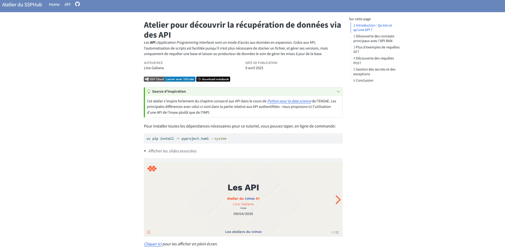

L’atelier a eu lieu le 9 avril 2025 (15h - 16h30), en présentiel à l’Insee et en distanciel pour les membres du réseau du SSP Hub. Environ 35 personnes ont participé de l’Insee (DG ou directions régionales), de différents services statistiques ministériels ou d’autres horizons. Merci à tous pour les échanges !
Slides de la présentation
Documentation de l’atelier & replay
Le matériel lié à l’atelier, y compris le replay, est disponible ici. 
Questions / contact
Si vous avez la moindre question 🤨, n’hésitez pas à contacter 📧 contact-ssphub@insee.fr.